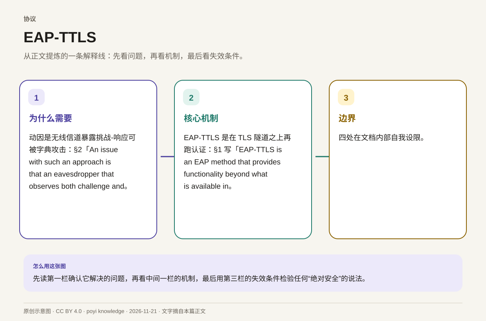
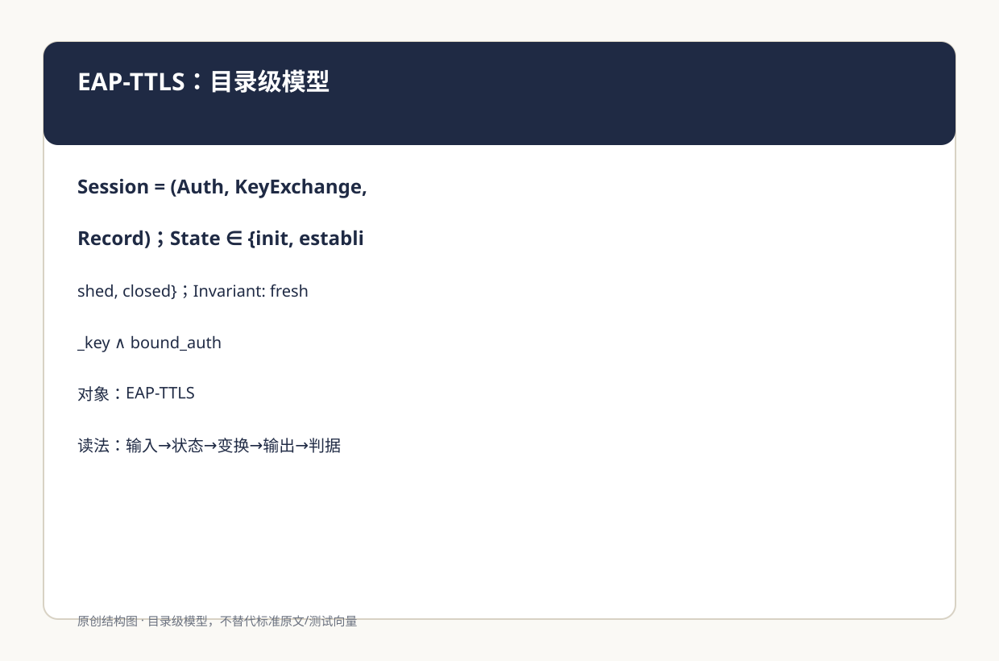

原理与机制
协议：EAP-TTLS（EAP-TTLS）。EAP-TTLS 是在 TLS 隧道之上再跑认证：§1 写「EAP-TTLS is an EAP method that provides functionality beyond what is available in EAP-TLS.」§7 给出两阶段结构——「A EAP-TTLS negotiation comprises two phases: the TLS handshake phase and the TLS tunnel phase.」第一阶段服务器以 Start 包起步：§7.1「The TTLS server initiates the EAP-TTLS method with an EAP-TTLS/Start packet」。

为什么重要
动因是无线信道暴露挑战-响应可被字典攻击：§2「An issue with such an approach is that an eavesdropper that observes both challenge and response may be able to mount a dictionary attack」并说明「Because passwords typically have low entropy, such attacks can in practice easily discover many passwords.」§2 还点出无线网络改变了威胁前提：「Wireless connections are considerably more susceptible to eavesdropping and man-in-the-middle attacks.」§1 的策略是复用既有口令基础设施：「EAP-TTLS extends this authentication negotiation by using the secure connection established by the TLS handshake to exchange additional information between client and server.」§5.4 总结效果：EAP-TTLS 让用户身份与口令信息得以安全传输。
应用与实例
§7 把第二阶段的安全性系于第一阶段协商的套件：「Note that the type and degree of security in phase 2 depends on the cipher suite negotiated during phase 1; if the null cipher suite is negotiated, there will be no security!」；§7.2 定义隧道内容：「In phase 2, the TLS record layer is used to securely tunnel information between client and TTLS server.」§7.7 允许任一 TLS 版本并要求支持 TLS 1.0 以保互操作；§11.4 定基线：「an implementation compliant with this specification MUST implement EAP as a tunneled authentication method and MUST implement MD5-Challenge as an EAP type」。§14.

边界与攻击面
四处在文档内部自我设限。§14.2 承认匿名性可被旁路：实现者应知晓「other factors -- both within EAP-TTLS and elsewhere -- may compromise a user's identity.」§14.3 把服务器信任交给配置：「The client should have a means of determining which server identities are authorized to act as a TTLS server and may be trusted, and should refuse to authenticate with servers it does not trust.」§14.4 要求校验证书路径并处理 EKU 缺失即无约束的情形。§14.7 记录版本协商在隧道之外：「EAP-TTLS negotiates its own protocol version prior to, and therefore outside the security established by the TLS tunnel.」并说明版本 0 因此暂无被降级的面。
历史与背景
RFC 5281 由 P.Funk（Unaffiliated）与 S.Blake-Wilson（SafeNet）署名，2008 年 8 月发布，Category 标注 Informational，头部无 Obsoletes 行。§1 明确这是一份记录现状的文档：「EAP-TTLS has been widely deployed and this specification documents what existing implementations do.」并承认局限：「It has some limitations and vulnerabilities, however.」把改进指向扩展与标准化隧道内方法的后续工作。
逐步示例与核验
形式模型与复算步骤
[\mathrm{Adv}^{\Pi}_A(\lambda)\le n\cdot\mathrm{Adv}^{\mathrm{prf}}F(\lambda)+\varepsilon{\mathrm{aead}}(\lambda)]
EAP-TTLS的公开参数、密钥/随机数与消息；变量说明：Π 协议，A 敌手，n 会话数，PRF/AEAD 为底层原语。1.把协议消息序列写成状态机。2.用混合论证逐个替换原语。3.把剩余优势归约到 PRF/AEAD 安全。边界：公式只覆盖已登记的参数与假设；参数取值、标准版本和实现细节仍以来源为准。
参考出处
- Wikipedia search entry for EAP-TTLS. https://zh.wikipedia.org/w/index.php?search=EAP-TTLS
- Handbook of Applied Cryptography (Menezes, van Oorschot, Vanstone). https://www.cacr.math.uwaterloo.ca/hac/